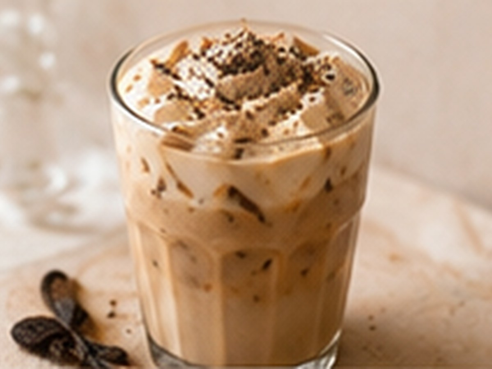

Iced CoffeeIced Coffee
Tonka Iced Latte
Tonka, eisgekühlt.
⏱4 Min.
📶Einfach
☕1 Portion
🫘Zutaten
- Espresso1 Shot
- Milch, kalt180 ml
- Eiswürfelnach Bedarf
- Tonka-Sirup2 cl
📋Zubereitung
- 1Tonka-Sirup ins Glas geben.
- 2Eiswürfel und kalte Milch dazu.
- 3Espresso darüber gießen.
💡
Kaffee für dieses Rezept entdeckenLeNoKo Shop
→
Kaffee-Tipp
unseren Aurum Noctis bleibt auch eisgekühlt gut erkennbar neben Tonka.